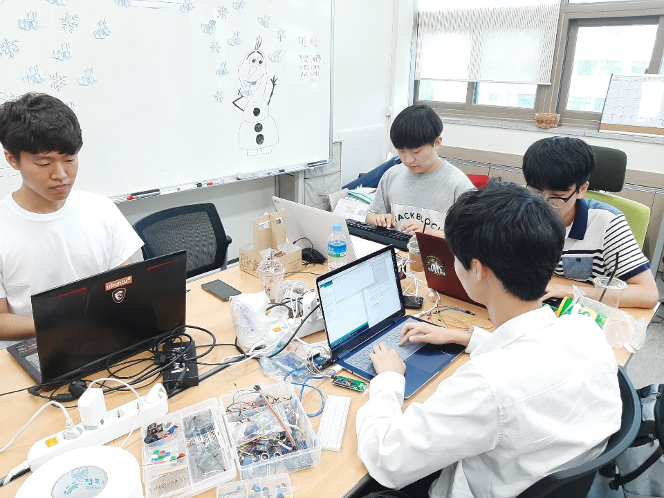

오늘은 두번째 모각코를 한 날짜입니다.
오늘은 모든 인원이 함께 모여 코딩을 했어요.
목표 공유와 회고
김경민: React를 이용해 개인 블로그 구축
가장 기본적인 블로그를 만들기 위한 컴포넌트와 props를 만들었고 어떤 방식으로 만들지 사이트를 구축해나갔습니다.
문영균: 리눅스를 이용해 홈페이지 만들기
오늘은 리눅스를 이용해서 나만의 홈페이지를 만드는 것이 목표였습니다. 저는 서버가 없으니 우리 동아리(ARGOS)의 서버를 통해 나만의 홈페이지를 만드는 것을 진행했습니다. 먼저 서버에 접속하기 위해 xshell이라는 프로그램을 통해 서버에 접속했습니다.
박재우: Github블로그 공부
Bottom UP 프로젝트를 진행하며 필요한 안드로이드 공부를 진행하였습니다. 날씨 API를 끌어와서 어플에 연동시키는 방법을 배웠습니다.
안준혁: Github 블로그 공부
깃허브 공부를 한 후 깃허브 블로그를 만들고 포스터를 작성하였습니다.
유찬희: 아두이노 공부
며칠 뒤 아르고스에서 진행하는 교육봉사활동에서 아두이노를 알려 줄 예정이라 그에 맞춰서 예습을 하게 되었습니다. 처음에는 아래 코드와 같이 간단한 LED 조작부터 시작해서 부저와 버튼을 이용해 간단한 미니 피아노 만드는 것까지 실습을 해 보았습니다.